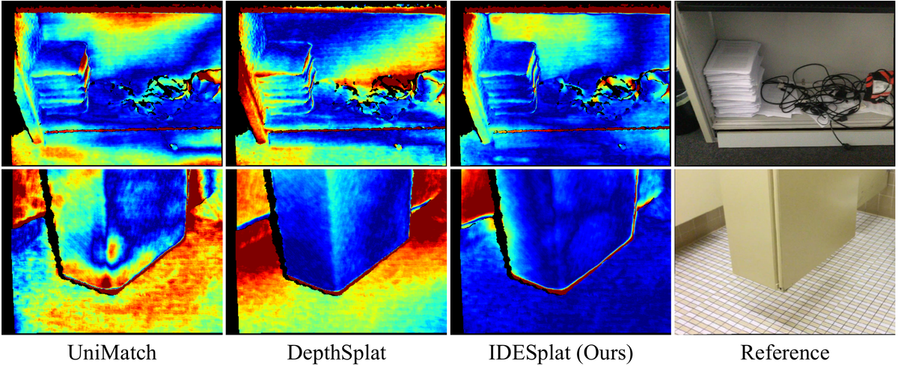

IDESplat：可推广 3D 高斯 Sp 的迭代深度概率估计
简单摘要
逐场景优化的3DGS受益于光栅化友好的管线，适合实时场景重建但泛化能力有限。可泛化3DGS通过前馈网络直接预测所有高斯参数来解决这一短板，使其能处理未见场景。在所有高斯参数中，高斯中心位置最关键但也最难直接预测（因高斯梯度的局部支持特性），对整体参数优化影响显著。现有方法通常先估计逐像素深度图再反投影获取高斯球中心——这种设计通过解耦高斯中心参数预测降低了网络优化难度，但也增加了对精确深度估计的依赖。早期方法使用可微操作直接从图像特征预测深度概率分布；后续方法引入代价体（cost volume）通过变形操作建立跨视图特征相似性，提供了宝贵的几何线索。但这些方法仅依赖单次变形来建模特征相似性，无法充分利用丰富的几何信息，导致不可靠和粗糙的深度图。因此，如何通过多次变形逐步利用丰富的跨视图几何细节来产生精炼可靠的深度图，仍是关键挑战。

核心创新
第一，提出IDESplat——一种迭代深度估计框架，通过多次变形操作逐步精炼深度图，累积跨视图几何线索来识别高似然表面点并抑制低概率深度候选。第二，设计深度概率增强单元（DPBU）——以乘法方式融合多个极线注意力图，消除单次变形的不确定性，产生更可靠的深度估计。第三，提出渐进式深度搜索范围更新策略——在逐步提高特征分辨率的同时重新定位深度搜索范围，使特征匹配在更精细尺度上变得更容易和精确。第四，设计高斯聚焦模块（Gaussian Focused Module）——确定最相关的高斯token来计算注意力权重进行特征交互，优化其他高斯参数的预测。实验表明IDESplat仅用DepthSplat 10.7%的参数量和70%的显存，在RealEstate10K上PSNR提升0.33 dB，跨数据集泛化能力出色。
技术细节
围绕 技术总览，给定一系列稀疏视图图像 ，其中每个图像具有维度 ，并且相应的相机投影矩阵为。为了实现高质量的 3D 重建，准确的深度图至关重要，因为它确定 3D 高斯的中心。扭曲操作是构建成本体积或极注意图的关键，因为它在源视图和目标视图中的特征之间建立了像素级对应关系。
接下来，我们并行计算特征相关性，如下所示。为了结合这些孤立的估计输出以获得更强的深度估计能力，我们提出了一种深度概率提升策略。
3 方法
围绕 3 方法，给定一系列稀疏视图图像 ，其中每个图像具有维度 ，并且相应的相机投影矩阵为。为了实现高质量的 3D 重建，准确的深度图至关重要，因为它确定 3D 高斯的中心。扭曲操作是构建成本体积或极注意图的关键，因为它在源视图和目标视图中的特征之间建立了像素级对应关系。
接下来，我们并行计算特征相关性，如下所示。为了结合这些孤立的估计输出以获得更强的深度估计能力，我们提出了一种深度概率提升策略。
3.1 预赛
给定一系列稀疏视图图像 ，其中每个图像具有维度 ，并且相应的相机投影矩阵为。可推广 3DGS 任务的目标是学习将图像映射到 3D 高斯参数的网络。为了实现高质量的 3D 重建，准确的深度图至关重要，因为它确定 3D 高斯的中心。作者这样设计，是为了把这一节的输入、约束和输出关系讲清楚。
$$ f_{\boldsymbol \theta}: \{ ({\mathcal I}^{i}, {\mathcal P}^i) \}_{i=1}^{V} \mapsto \{ (\boldsymbol{\mu}_j, \boldsymbol{\alpha}_j, \boldsymbol{\Sigma}_j, \boldsymbol{c}_j ) \}_{j=1}^{V \times H \times W}, $$
放在“方法”这一部分看，这条式子是在把 f theta : ( I i , P i) i 写成可直接计算的形式。右侧按元素列出了 f theta : ( I i , P i) i 的组成项，说明模型是在逐像素、逐高斯或逐候选地同时预测一整组属性，而不是只输出单个标量。
$$ {\boldsymbol F}^{j \to i} = \mathcal{W}({\boldsymbol F}^j, {\mathcal P}^i, {\mathcal P}^j, \boldsymbol G) \in \mathbb{R}^{\frac{H}{4} \times \frac{W}{4} \times D\times C}, $$
这条式子是在定义一个可直接计算的中间量：右侧把相对位置、方向、权重或比例关系组合起来，左侧则把这个组合结果记成后续模块要反复使用的变量。
$$ {\boldsymbol C}_{d_m}^{i} = ({\boldsymbol F}^i \cdot {\boldsymbol F}^{j \to i}_{d_m} / \sqrt{C}) \in \mathbb{R}^{\frac{H}{4} \times \frac{W}{4}}, $$
放在“方法”这一部分看，它重点在定义或约束 C d m i 这一项。这条式子是在定义一个可直接计算的中间量：右侧把相对位置、方向、权重或比例关系组合起来，左侧则把这个组合结果记成后续模块要反复使用的变量。
3.2 迭代多视图深度估计
在本文中，我们提出 IDESplat 使用多个扭曲操作迭代地提高特征相似性度量。扭曲操作是构建成本体积或极注意图的关键，因为它在源视图和目标视图中的特征之间建立了像素级对应关系。为了结合这些孤立的估计输出以获得更强的深度估计能力，我们提出了一种深度概率提升策略。
为了围绕当前预测对称地细化深度估计，我们使用相对深度候选偏移向量 来制定深度更新。具体来说，对于第一次迭代 ，我们在初始范围 内均匀采样深度候选。
$$ {\boldsymbol I}^{j \to i} = \mathcal{IW}({\boldsymbol F}^j, {\mathcal P}^i, {\mathcal P}^j, \boldsymbol G) \in \mathbb{R}^{\frac{H}{4} \times \frac{W}{4} \times D}, $$
放在“方法”这一部分看，它重点在定义或约束 I j to i 这一项。这条式子是在定义一个可直接计算的中间量：右侧把相对位置、方向、权重或比例关系组合起来，左侧则把这个组合结果记成后续模块要反复使用的变量。
$$ {\boldsymbol C}^{i} = \mathbf{\Psi}({\boldsymbol F}^i, {\boldsymbol F}^j, {\boldsymbol I}^{j \to i}) \in \mathbb{R}^{\frac{H}{4} \times \frac{W}{4} \times D}, $$
放在“方法”这一部分看，它重点在定义或约束 C i 这一项。这条式子是在定义一个可直接计算的中间量：右侧把相对位置、方向、权重或比例关系组合起来，左侧则把这个组合结果记成后续模块要反复使用的变量。
$$ \boldsymbol{A}^{i}=\mathrm{softmax} (\tilde{\boldsymbol{C}}^{i}). $$
放在“方法”这一部分看，这条式子重点不是孤立地罗列符号，而是交代 A i 如何承接前面的输入并把结果交给后续步骤。
$$ {\Delta \boldsymbol D_{n}} = {\boldsymbol P_{M,n}} {\Delta \boldsymbol G_{n}}. $$
放在“方法”这一部分看，这条式子重点不是孤立地罗列符号，而是交代 Delta D n 如何承接前面的输入并把结果交给后续步骤。
$$ {\boldsymbol D_{n}} = {\boldsymbol D_{n-1}} + {\Delta \boldsymbol D_{n}}, $$
放在“方法”这一部分看，它重点在定义或约束 D n 这一项。这条式子是在定义一个可直接计算的中间量：右侧把相对位置、方向、权重或比例关系组合起来，左侧则把这个组合结果记成后续模块要反复使用的变量。
3.3 高斯聚焦模块
围绕 3.3 高斯聚焦模块，基于窗口的注意力对每个高斯标记执行成对交互，通常包括许多不相关的标记。这种密集的交互不仅会减慢模型速度，还会在注意力结果中引入噪声。该模块利用跨层的 token 相似性来过滤掉不相关高斯特征的影响，实现相关且足够丰富的高斯特征交互。作者这样设计，是为了把这一节的输入、约束和输出关系讲清楚。
$$ \mathbf{S}^{l} = \mathbf{\Psi} (\mathbf{Q}^{l}, \mathbf{K}^{l}, \mathbf{I}^{l-1}), $$
这条式子是在定义一个可直接计算的中间量：右侧把相对位置、方向、权重或比例关系组合起来，左侧则把这个组合结果记成后续模块要反复使用的变量。
$$ \mathbf{O}^{l} = \mathbf{\Psi}(\mathbf{A}^{l}, \mathbf{V}^{l}, \mathbf{I}^{l}). $$
放在“方法”这一部分看，这条式子重点不是孤立地罗列符号，而是交代 O l 如何承接前面的输入并把结果交给后续步骤。
实验结论
具体来说，在 RE10K 数据集上，与 DepthSplat 相比，我们的方法将 PSNR 提高了 0.33 dB，同时仅使用了 10.7% 的参数。此外，与具有相似数量参数的 MonoSplat 相比，我们的方法实现了 1.12 dB 的显着改进。对于 SSIM 和 LPIPS 指标，我们的方法还分别获得了 0.893 和 0.108 的最佳结果。
为了评估我们提出的 IDESplat 的泛化能力，我们对未见过的数据集进行了跨数据集泛化测试。IDESplat 展示了出色的跨数据集泛化能力，在所有指标上都优于现有方法。对于 DTU 数据集，我们的方法比 DepthSplat 将 PSNR 提高了 2.95 dB，并实现了 0.239 的最佳 LPIPS 分数。
4.1 实验设置
我们的实验是在三个大型数据集上进行的。ACID 由无人机捕获的自然场景组成，其中有 11,075 个训练场景和 1,972 个测试场景。两个数据集均使用运动结构 (SfM) 算法进行校准，以估计相机每帧的内在和外在参数。
4.2 主要结果
此外，与具有相似数量参数的 MonoSplat 相比，我们的方法实现了 1.12 dB 的显着改进。对于 SSIM 和 LPIPS 指标，我们的方法还分别获得了 0.893 和 0.108 的最佳结果。对于 DTU 数据集，我们的方法比 DepthSplat 将 PSNR 提高了 2.95 dB，并实现了 0.239 的 lazy' decoding='async' />

| Method | Params (M) | RealEstate10k | ACID | ||||
|---|---|---|---|---|---|---|---|
| — | — | PSNR | SSIM | LPIPS | PSNR | SSIM | LPIPS |
| Du et al. | 125.1 | 24.78 | 0.820 | 0.213 | 26.88 | 0.799 | 0.218 |
| GPNR | 9.6 | 24.11 | 0.793 | 0.255 | 25.28 | 0.764 | 0.332 |
| pixelNeRF | 28.2 | 20.43 | 0.589 | 0.550 | 20.97 | 0.547 | 0.533 |
| MuRF | 5.3 | 26.10 | 0.858 | 0.143 | 28.09 | 0.841 | 0.155 |
| pixelSplat (CVPR 2024) | 125.4 | 26.09 | 0.863 | 0.136 | 28.27 | 0.843 | 0.146 |
| latentSplat (ECCV 2024) | 187.0 | 23.07 | 0.825 | 0.182 | 24.95 | 0.782 | 0.207 |
| MVSplat (ECCV 2024) | 12.0 | 26.39 | 0.869 | 0.128 | 28.25 | 0.843 | 0.144 |
| eFreeSplat (NIPS 2024) | - | 26.45 | 0.865 | 0.126 | 28.30 | 0.851 | 0.140 |
| Method | RE10kDTU | RE10kACID | ||||
|---|---|---|---|---|---|---|
| — | PSNR | SSIM | LPIPS | PSNR | SSIM | LPIPS |
| pixelSplat | 12.89 | 0.382 | 0.560 | 27.64 | 0.830 | 0.160 |
| MVSplat | 13.94 | 0.473 | 0.385 | 28.15 | 0.841 | 0.147 |
| MonoSplat | 15.25 | 0.605 | 0.291 | 28.24 | 0.848 | 0.145 |
| Depthsplat | 15.38 | 0.415 | 0.442 | 28.37 | 0.847 | 0.141 |
| row_color IDESplat (Ours) | 18.33 | 0.719 | 0.239 | 28.79 | 0.853 | 0.135 |
| Method | Params (M) | Mem. (M) | Time (s) | PSNR |
|---|---|---|---|---|
| pixelSplat | 125.4 | 4108 | 0.120 | 26.09 |
| MVSplat | 12.0 | 1940 | 0.054 | 26.39 |
| MonoSplat | 30.3 | 1606 | 0.062 | 26.68 |
| Depthsplat | 354 | 3342 | 0.082 | 27.47 |
| row_color IDESplat (Ours) | 37.6 | 2336 | 0.110 | 27.80 |
| Method | Abs Rel | RMSE | RMSE_log |
|---|---|---|---|
| UniMatch | 0.059 | 0.179 | 0.082 |
| DepthSplat | 0.045 | 0.125 | 0.061 |
| row_color IDESplat | 0.039 | 0.116 | 0.053 |
4.3 消融研究
我们对所提议的 IDESplat 的各个组件进行了详细的烧蚀实验。当我们将DPBS策略纳入迭代过程时，性能显着提高了0.46 dB，最好结果为27。我们进行了消融实验来评估 IDESplat 在不同迭代次数下的效率和重建性能。
| Method | PSNR | SSIM | LPIPS |
|---|---|---|---|
| Baseline | 26.31 | 0.866 | 0.129 |
| + GFM | 26.63 | 0.875 | 0.124 |
| + IDE(3) | 26.88 | 0.878 | 0.120 |
| + IDE(3) + GFM | 27.07 | 0.882 | 0.118 |
| + IDE(3) + DPBS | 27.34 | 0.887 | 0.112 |
| Full Model | 27.56 | 0.889 | 0.110 |
| Iterations | Params (M) | Mem. (M) | Time (s) | PSNR | SSIM | LPIPS |
|---|---|---|---|---|---|---|
| 0 | 35.4 | 1674 | 0.056 | 26.63 | 0.875 | 0.124 |
| 1 | 36.8 | 1734 | 0.071 | 27.08 | 0.882 | 0.113 |
| 2 | 37.3 | 1902 | 0.091 | 27.31 | 0.884 | 0.112 |
| 3 | 37.6 | 2336 | 0.110 | 27.56 | 0.889 | 0.110 |
| 4 | 38.0 | 2745 | 0.132 | 27.64 | 0.890 | 0.109 |
理解评价
如果把这篇论文放回问题背景里看，它真正的价值在于：现有方法通常仅依赖于单个扭曲来估计深度概率，这阻碍了它们充分利用跨视图几何线索的能力，导致不可靠且粗糙的深度图。这说明作者不是只补一个局部模块，而是在重新组织问题该怎样被解决。
最能支撑这个判断的，还是实验给出的证据：为了解决这个限制，我们提出了 IDESplat，它迭代地应用扭曲操作来增强深度概率估计，以实现准确的高斯均值预测。换句话说，这些设计并不只是概念上更完整，而是实实在在改变了最终结果。
当然，它离真正成熟的方案还有距离：当前方案的局限在于它仍然受制于计算资源、输入质量或场景复杂度，距离真正稳健的大规模部署还有差距。后续更值得继续推进的方向，是 此外，与具有相似数量参数的 MonoSplat 相比，我们的方法实现了 1.12 dB 的显着改进。